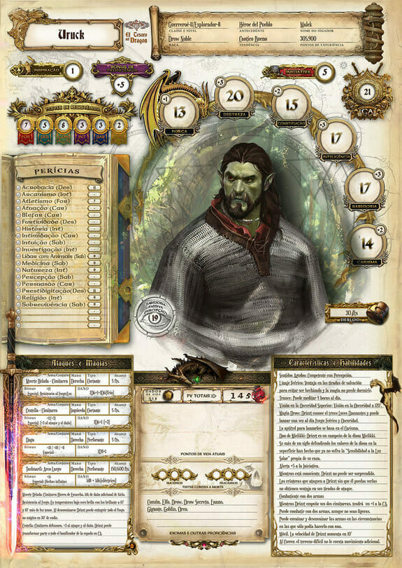
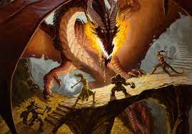
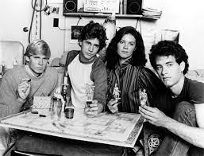
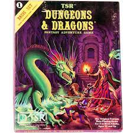

Home
In Dungeons & Dragons, the players form an adventuring party who explore fantasy worlds together as they embark on epic quests and level up in experience. The Dungeon Master (also known as the DM) is the game's referee and storyteller. There’s no winning or losing in D&D—at least, not in the conventional way.
Dungeons & DragonsAt its heart, D&D is a game that focuses on storytelling. The dice just help you along. Everything is your decision, from what you look like, to how you act, to what happens next.
The collective creativity in your D&D game builds stories that you’ll tell again and again—ranging from the stuff of legend to absurd incidents that’ll make you laugh years later.
Gameplay

Overview
In D&D, each player creates a heroic character to represent them in the game: this might be a skilled fighter, a devout cleric, a deadly rogue, a spellcasting wizard, or something else entirely!
Together, the Dungeon Master (or DM) and players create an exciting story where their bold adventurers confront deadly perils. Even if the group doesn’t complete the adventure successfully, the good time and memories make everyone a winner.
Dungeon Masters
In Dungeons & Dragons, one person serves as the Dungeon Master (or "DM"), the game’s lead storyteller and referee. The DM runs the adventure for the players, who navigate its hazards and decide which paths to explore.
Dungeons & DragonsThe DM describes the locations and creatures in an adventure, and the players decide what they want their characters to do. Then the DM, using imagination and the game's rules, determine the results of their actions and narrates what they experience.
Because the DM can improvise to react to anything the players attempt, D&D is infinitely flexible, and each adventure can be exciting and unexpected.
Character Sheets
A character sheet is something that you fill out to create your character. Document their traits, class, skills, and more!
Click here to create a character sheet


History
An immediate predecessor of Dungeons & Dragons was a set of medieval miniature rules written by Jeff Perren. These were expanded by Gary Gygax, whose additions included a fantasy supplement, before the game was published as Chainmail. When Dave Wesely entered the Army in 1970, his friend and fellow Napoleonics wargamer Dave Arneson began a medieval variation of Wesely's Braunstein games, where players control individuals instead of armies. Arneson used Chainmail to resolve combat. As play progressed, Arneson added such innovations as character classes, experience points, level advancement, armor class, and others. Having partnered previously with Gygax on Don't Give Up the Ship!, Arneson introduced Gygax to his Blackmoor game and the two then collaborated on developing "The Fantasy Game", the game that became Dungeons & Dragons, with the final writing and preparation of the text being done by Gygax.[68][69][70] The name was chosen by Gygax's two-year-old daughter Cindy; upon being presented with a number of choices of possible names, she exclaimed, "Oh Daddy, I like Dungeons & Dragons best!", although less prevalent versions of the story gave credit to his then wife Mary Jo.
Many Dungeons & Dragons elements appear in hobbies of the mid-to-late 20th century. For example, character-based role playing can be seen in improvisational theater. Game-world simulations were well developed in wargaming. Fantasy milieux specifically designed for gaming could be seen in Glorantha's board games, among others. Ultimately, however, Dungeons & Dragons represents a unique blending of these elements.
The world of D&D was influenced by world mythology, history, pulp fiction, and contemporary fantasy novels. The importance of J. R. R. Tolkien's The Lord of the Rings and The Hobbit as an influence on D&D is controversial. The presence in the game of halflings, elves, half-elves, dwarves, orcs, rangers, and the like, as well as the convention of diverse adventurers forming a group, draw comparisons to these works. The resemblance was even closer before the threat of copyright action from Tolkien Enterprises prompted the name changes of hobbit to 'halfling', ent to 'treant', and balrog to 'balor'. For many years, Gygax played down the influence of Tolkien on the development of the game. However, in an interview in 2000, he acknowledged that Tolkien's work had a "strong impact" though he also said that the list of other influential authors was long.

